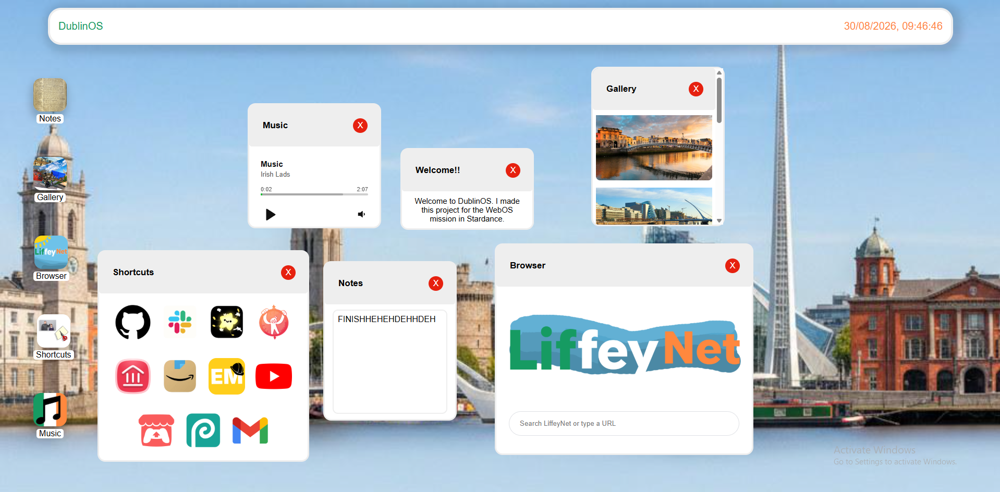
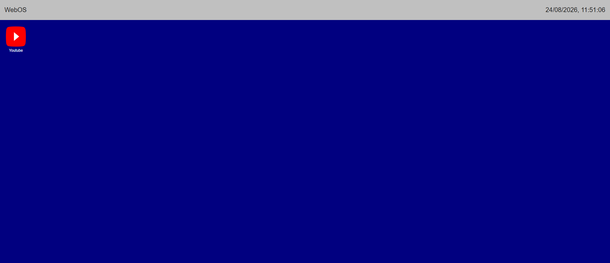
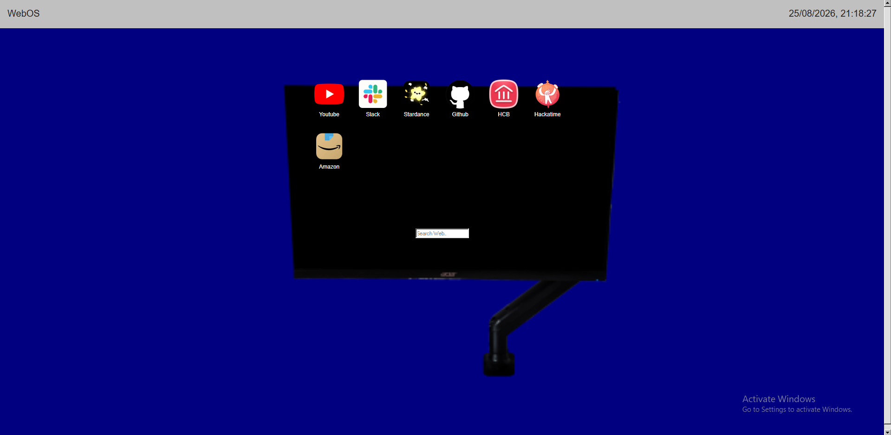
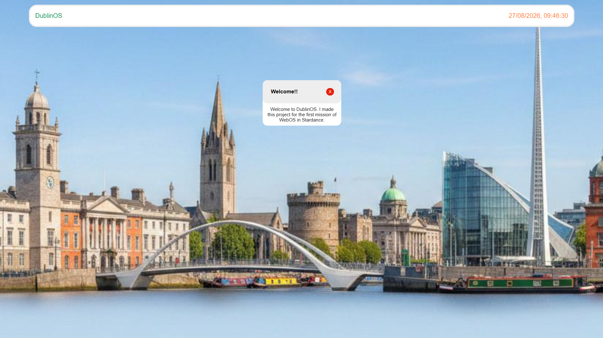
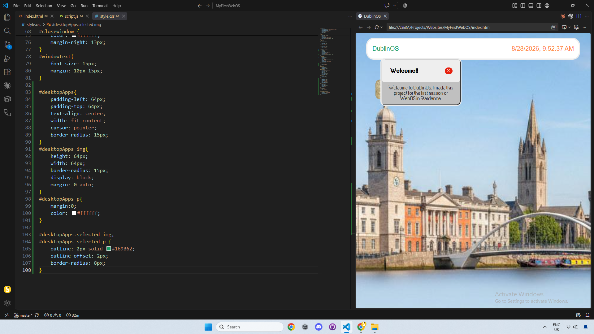
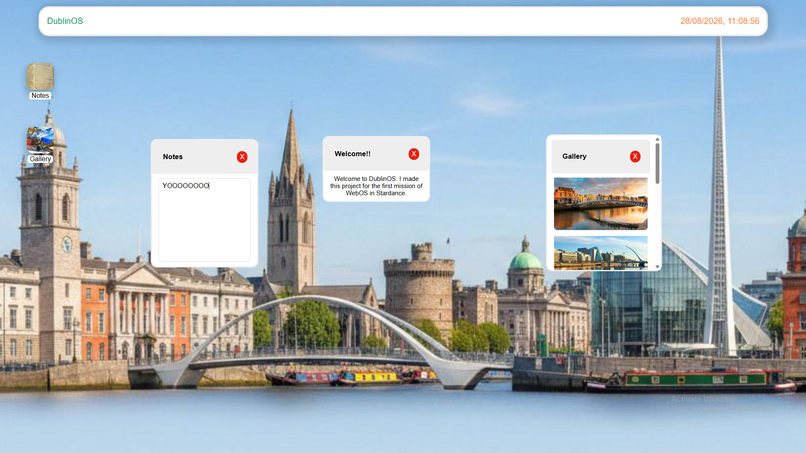
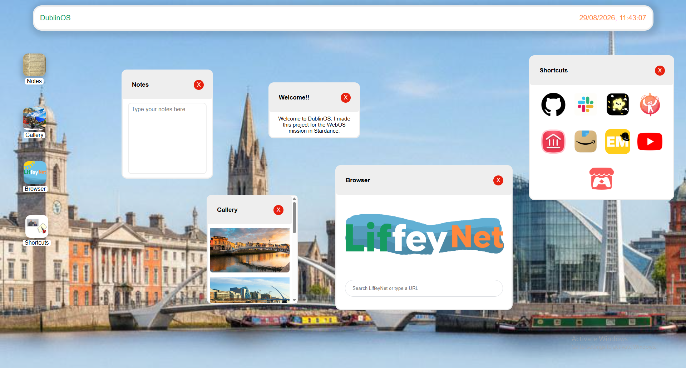

An Operating System with the theme of Dublin that can be run on the web.

DublinOS is an Operating System that can be run on the web.
DublinOS has many features like draggable windows, a clock for anyone who needs the time and apps, the apps i made were Notes, Gallery, Browser, Shortcuts and a music app that plays some fire Irish music! To make everything I used HTML, CSS, and JS(Javascript)
I enjoyed working on the project it was interesting and pretty challenging to make a webpage that isn't just text and images like my past personal portfolio project
The images here in the gallery section are all in order from the first itteration and design to the last finished project!





